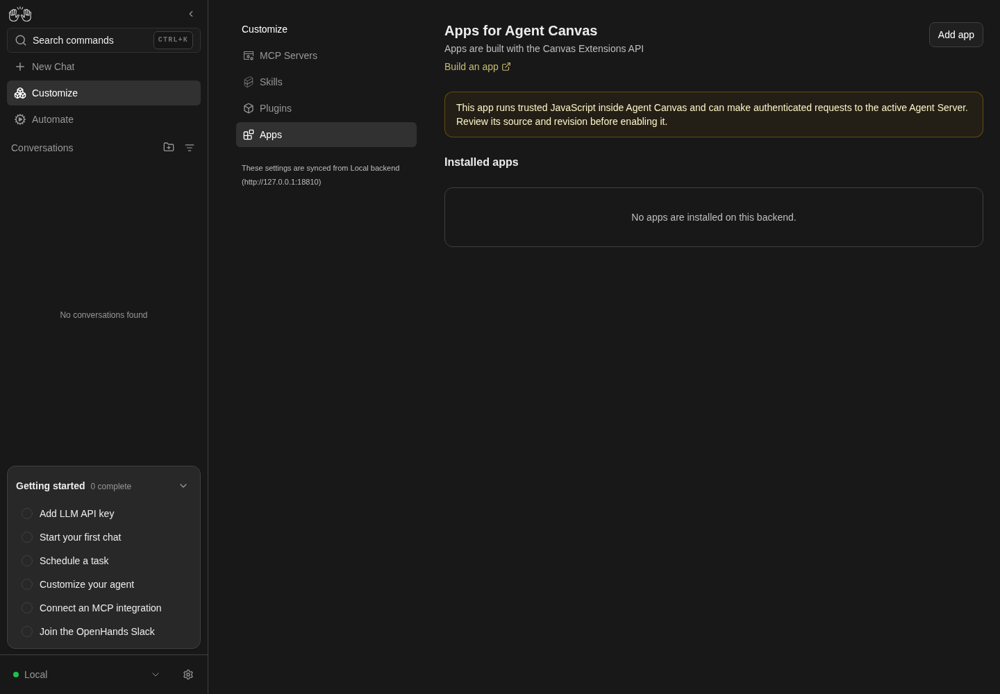
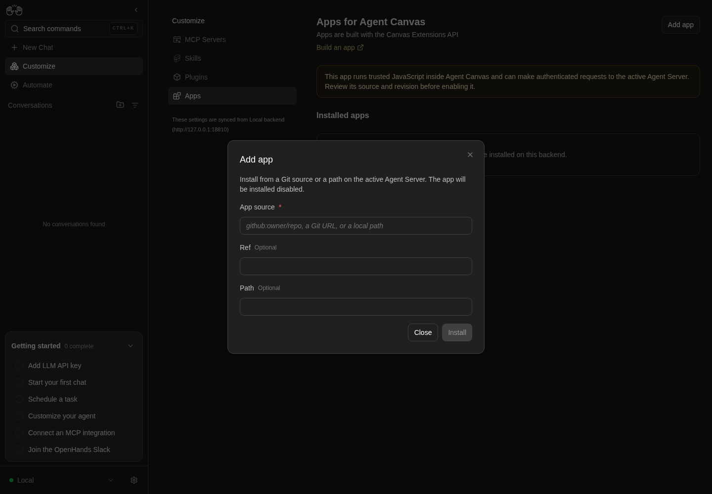

How to get to it
- Main sidebar Customize (
sidebar-skills-link, lands on/mcp), then Apps in the Customize navigation (sidebar-extensions-/apps). - Command menu (
Control+k/Meta+korcommand-menu-trigger): searchCustomize, Enter (lands on/mcp), then Apps. SearchingAppsfinds nothing. - Phone:
/customizeshows the Customize hub (extensions-mobile-hub) instead of redirecting; tap Apps. - Direct URL
/apps. - App pages are not in the command menu; only the rail (or a URL) reaches them.
- App pages: the app's entry in the main sidebar rail (phone: the sidebar drawer,
sidebar-mobile-menu-toggle), or the direct URL/extensions/<name>/<path>[/<sub-path>].
Before you start
Start with the common launch and health checks, then follow this family’s preconditions in order. Recipes share the fixtures and state named below.
Preconditions:
- Baseline state (launched, doctored,
onboard --skipdone) on the launcher's local Agent Server. No LLM is needed. - No app is installed:
control-openhands api GET /api/canvas-extensions/installedreturns"canvas_extensions": []. - Run commands from the checkout root: recipes install the bundled, reviewed fixture
$PWD/src/fixtures/canvas-extensions/demo-page(namedemo-page, display nameDemo page, one pagehelloat/hello). Never install or enable arbitrary third-party code: enabling runs it inside Canvas. - Git bullets (tree URL, Ref and Path, busy lock, duplicate): the Agent Server can read
https://github.com/OpenHands/OpenHandsanonymously (read-only; no account needed), and that repo'smainholds the same reviewed fixture atsrc/fixtures/canvas-extensions/demo-page. Check both before installing, with a read-only shell step:git clone -q --depth 1 --filter=blob:none --sparse https://github.com/OpenHands/OpenHands "$OH_VERIFY_RUN/private/qa-upstream" && git -C "$OH_VERIFY_RUN/private/qa-upstream" sparse-checkout set src/fixtures/canvas-extensions && diff -r "$OH_VERIFY_RUN/private/qa-upstream/src/fixtures/canvas-extensions/demo-page" src/fixtures/canvas-extensions/demo-page && git -C "$OH_VERIFY_RUN/private/qa-upstream" rev-parse HEADmust print no diff and a commit. Enable a Git-installed copy only when the card's Ref equals that commit. If GitHub is unreachable or the diff is not empty, these bullets are blocked (a local smart-HTTP Git server would do, butcontrol-openhandshas no verb for one; dumb HTTP such aspython3 -m http.serverfails the Agent Server's fetch). - Desktop viewport unless a bullet says otherwise.
Behavior inventory
24 stable behavior IDs and their expected behavior
F20.entry-pointsthe Apps page is reached from the sidebar Customize link (lands on/mcp) then Apps in the Customize navigation, from the command menu's Customize command plus Apps, from the phone Customize hub, and by direct URL/apps; there is no bare/extensionspage and no "Apps" command. Read recipe ↓F20.page/appsshows the title Apps for Agent Canvas, a description, a Build an app docs link (new tab), an enabled Add app button, the amber trust notice, the Installed apps heading and, with nothing installed,No apps are installed on this backend.Read recipe ↓F20.add-modalAdd app opens a form with App source (required), Ref and Path; Install stays disabled while the source is empty or blank; Close, the X, Escape and a backdrop click close it. Read recipe ↓F20.installinstalling from a local path shows Installing…, toastsApp installed. Review it here, then enable it when you are ready., closes the form and lists the app disabled (after reload too) with no rail entry; a local App source plus Path is joined into one path. Read recipe ↓F20.install-errora failed install toasts the server's reason (Could not read canvas extension source: …) and keeps the form open with the input, for local paths and for unreachable Git sources alike. Read recipe ↓F20.git-tree-urla Git host folder URL (…/<owner>/<repo>/tree/<ref>/<path>) pasted into App source is split into source, ref and path; the card shows the repo URL as source, Ref (resolved commit) and Path. Read recipe ↓F20.git-ref-paththe Ref and Path fields apply to a Git source, including the placeholder'sgithub:owner/reposhorthand; the card keeps the source as typed and shows the resolved commit and the path. Enter in a field submits the form. Read recipe ↓F20.install-duplicateinstalling an app whose name is already installed is refused (409): the form stays open with its input, the toast says the app is already installed and points to Update or Uninstall on its card, and the existing card is unchanged. Read recipe ↓F20.cardeach card shows the display name, source, arole=switch(Enable/Disable), the description,Disabled/Enabled,v<version>andPages: Npills, each page title, and Update and Uninstall buttons. Read recipe ↓F20.enable-confirmswitching a disabled app on (click or Space) opens a trust confirmation (confirmation-modal) with Cancel and Enable trusted app; Cancel, Escape and a backdrop click leave it disabled, confirming enables it (persists after reload). Read recipe ↓F20.rail-entryan enabled app's page appears in the main sidebar rail assidebar-canvas-extension-<name>-<pageId>linking to/extensions/<name>/<path>. Read recipe ↓F20.rail-activeon the app's page its rail entry is marked current (aria-current="page", highlighted); with the sidebar collapsed the entry is an icon whose tooltip andaria-labelcarry the label. App pages are not listed in the command menu. Read recipe ↓F20.rail-labelthe rail entry is labelled with the page'snav_label(Extension demofor the demo fixture), falling back to its title. Read recipe ↓F20.page-renderthe rail entry and the direct URL mount the app intomainnamed after the page title (demo: h1Hello from a Canvas Extension); a deeper URL passes the rest of the path to the app (Nested extension path: nested). Read recipe ↓F20.app-backend-viewan app page learns from the host whether it has a backend view; the host offers one only when the Agent Server advertises thecanvas_app_backend_bridge_v1capability with an app-backend ingress URL, so on the pinned server the demo's status line readsApp backend view unavailableon every path of its page. Read recipe ↓F20.phoneat 390 px the Customize hub lists Apps, the Apps page, the Add form and an app page fit without horizontal overflow, and the app's entry is in the sidebar drawer. Read recipe ↓F20.refreshUpdate re-installs from the recorded source, toastsApp updated.and keeps the enabled state; a failed update toasts the error and leaves the card unchanged. Read recipe ↓F20.persist-restartinstalled apps, their enabled state and rail entries survive a stack restart. Read recipe ↓F20.disableswitching an enabled app off happens immediately without confirmation, removes its rail entry and makes its page unavailable. Read recipe ↓F20.uninstallUninstall asksUninstall <display name> from this backend?; Escape or Cancel keep the app, Confirm toastsApp uninstalled.and removes the card and the rail entry. Read recipe ↓F20.busy-lockwhile Update, Uninstall or Enable is pending, every card control is inert, the switch included. Read recipe ↓F20.load-errorwhen listing apps fails, the Installed section shows the error and a Retry button. Read recipe ↓F20.unsupportedon a Cloud backend, with no backend, or on an Agent Server without the apps API, the Installed section shows Not available with the reason and Add app is disabled; Cloud hides Apps from the Customize navigation. Read recipe ↓
Readable recipes
Read each script from top to bottom. Code is copied from the map; prose gives the action, expected observation, and conditions. <id>, <run> and similar placeholders stand for values from your own run. Short forms such as browser count continue the same control-openhands invocation; they are kept as documented.
Expected observations describe the recipe’s contract. Captures below selected recipes show representative real states from this snapshot; they do not mark every mapped behavior as passed. Follow cleanup before moving to another family.
No recipes match. Try another word or a behavior ID.
Sidebar entry and empty page #
- NoteFrom
/run - Check
control-openhands browser click 'testid=sidebar-skills-link' --expect-url '/mcp(\?|$)' - Check
control-openhands browser click 'testid=sidebar-extensions-/apps' --expect-url '/apps(\?|$)' - Check
control-openhands browser snapshot 'testid=canvas-extensions-screen >> main' - ExpectThe snapshot shows heading
Apps for Agent Canvas, the descriptionApps are built with the Canvas Extensions API, linkBuild an app, buttonAdd app, the trust notice, headingInstalled appsand paragraphNo apps are installed on this backend. - Check
control-openhands browser enabled 'testid=canvas-extensions-add-button'is
trueand - Check
control-openhands browser attr 'role=link[name="Build an app"]' targetis
_blank. - Do
control-openhands browser screenshot --feature F20.page --name empty

Apps page is reachable from Customize and shows no installed apps.
Local backend only; no third-party app is installed.
How this screenshot was taken
agent server: 1.53.0 · automation: 1.19.0 (launcher default) · canvas: 1.26.0
control-openhands browser click testid=sidebar-extensions-/apps --expect-url '/apps(\?|$)'
control-openhands browser snapshot 'testid=canvas-extensions-screen >> main'
control-openhands browser screenshot --feature F20.entry-points --name empty-appsCommand-menu entry #
- NoteFrom
/run - Do
control-openhands browser press Control+k - Do
control-openhands browser type 'testid=command-menu >> role=combobox' Apps - Check
control-openhands browser snapshot 'testid=command-menu' - Note: it reads
No commands found. - Do
control-openhands browser fill 'testid=command-menu >> role=combobox' Customize - Do
control-openhands browser press Enter - Wait
control-openhands browser wait-url '/mcp(\?|$)' - Check
control-openhands browser click 'testid=sidebar-extensions-/apps' --expect-url '/apps(\?|$)' - Do
control-openhands browser goto /extensions - Check
control-openhands browser snapshot 'testid=not-found-screen' - Noteshow the app's not-found page, like any unknown path: heading
Page not found,This address does not match any page. Check the URL, or go back to the home page.and linkHome.
Add form and its closers #
- NoteOn
/apps(control-openhands browser goto /apps; the previous bullet ends on the/extensionsnot-found page) run - Do
control-openhands browser click 'testid=canvas-extensions-add-button' - Check
control-openhands browser snapshot 'testid=add-canvas-extension-modal' - Note: heading
Add app, introInstall from a Git source or a path on the active Agent Server. The app will be installed disabled., textboxesApp source,Ref Optional,Path Optional, buttonsCloseandInstall [disabled]. - NoteAfter
- Do
control-openhands browser fill 'testid=add-canvas-extension-source-input' ' ' - Check
control-openhands browser enabled 'testid=add-canvas-extension-submit'is still
false. - NoteEach of
- Do
control-openhands browser click 'testid=add-canvas-extension-dismiss' - Do
control-openhands browser click 'testid=add-canvas-extension-modal-close' - Do
control-openhands browser press Escape - Do
control-openhands browser mouse-click 20 500(backdrop) closes it:
- Check
control-openhands browser count 'testid=add-canvas-extension-modal'is
0(reopen withcanvas-extensions-add-buttonbetween them).

Add app form shows source, optional ref and path, and a disabled Install button.
Only opening the form illustrated; no installation or enablement.
How this screenshot was taken
agent server: 1.53.0 · automation: 1.19.0 (launcher default) · canvas: 1.26.0
control-openhands browser goto /apps
control-openhands browser click testid=canvas-extensions-add-button
control-openhands browser screenshot --feature F20.add-modal --name add-appInstall error, local path #
- NoteOpen the form, run
- Do
control-openhands browser fill 'testid=add-canvas-extension-source-input' /nonexistent/qa-app - Do
control-openhands browser click 'testid=add-canvas-extension-submit' - Check
control-openhands browser toasts - Note:
Could not read canvas extension source: Local extension path does not exist: /nonexistent/qa-app.browser count 'testid=add-canvas-extension-modal'stays1and the input keeps its value. - Check
control-openhands browser errors --app-onlylists the expected
400onPOST /api/canvas-extensions/install.
Install error, Git source #
- NoteIn the same form run
- Check
control-openhands browser toasts --clear - Do
control-openhands browser fill 'testid=add-canvas-extension-source-input' 'http://127.0.0.1:9/qa-owner/qa-missing' - Do
control-openhands browser click 'testid=add-canvas-extension-submit' - Wait
control-openhands browser wait 'testid=add-canvas-extension-submit >> text=Install' --timeout 60000 - Check
control-openhands browser toasts --history - Do
control-openhands browser screenshot --feature F20.install-error --name git-server-reason - ExpectThe history holds one toast with the server's 400 detail,
Could not read canvas extension source: Failed to fetch extension from http://127.0.0.1:9/qa-owner/qa-missing(browser toastsmay still list the local-path toast below it). - ExpectThe form stays open with the URL.
Install the demo #
- NoteIn the open form run
- Do
control-openhands browser fill 'testid=add-canvas-extension-source-input' "$PWD/src/fixtures/canvas-extensions/demo-page" - Do
control-openhands browser click 'testid=add-canvas-extension-submit' --observe 'testid=add-canvas-extension-submit' - Note: the observed states are
Install,Installing… [disabled],<absent>. - Check
control-openhands browser toastsshows
App installed. Review it here, then enable it when you are ready.Then - Do
control-openhands browser reload - Check
control-openhands browser attr 'testid=canvas-extension-card-demo-page >> role=switch' aria-checked(
false) and - Check
control-openhands browser count 'testid=sidebar-canvas-extension-demo-page-hello'(
0).
Card #
- Check
control-openhands browser snapshot 'testid=canvas-extension-card-demo-page' - Note: heading
Demo page, the source path, switchEnable,A dependency-free fixture for the Canvas Extension page ABI., textDisabled v0.1.0 Pages: 1, list itemHello from an extension, buttonsUpdateandUninstall. - Do
control-openhands browser screenshot --feature F20.card --name disabled
Trust confirmation #
- Do
control-openhands browser click 'testid=canvas-extension-card-demo-page >> role=switch' - Check
control-openhands browser snapshot 'testid=confirmation-modal' - Note: the paragraph
This app runs trusted JavaScript inside Agent Canvas and can make authenticated requests to the active Agent Server. Review its source and revision before enabling it., buttonsCancelandEnable trusted app. - Do
control-openhands browser click 'testid=confirmation-modal >> testid=cancel-button' - Notecloses it and
aria-checkedstaysfalse. - NoteKeyboard:
- Do
control-openhands browser focus 'testid=canvas-extension-card-demo-page >> role=switch' - Do
control-openhands browser press Space - Noteopen it again (
browser count 'testid=confirmation-modal'is1); - Do
control-openhands browser press Escape - Notecloses it and
api GET /api/canvas-extensions/installedstill says"enabled": false. - NoteBackdrop: click the switch again,
- Do
control-openhands browser mouse-click 20 500 - Notethen
browser count 'testid=confirmation-modal'is0and the API still says"enabled": false. - NoteReopen with the click, then
- Do
control-openhands browser click 'testid=confirmation-modal >> testid=confirm-button' - Do
control-openhands browser reload - Noteand read
aria-checked:true; - Check
control-openhands browser text 'testid=canvas-extension-card-demo-page' - Notecontains
Enabled.
Rail entry #
- ExpectAfter enabling, run
- Wait
control-openhands browser wait 'testid=sidebar-canvas-extension-demo-page-hello' --timeout 10000 - Check
control-openhands browser attr 'testid=sidebar-canvas-extension-demo-page-hello' href(
/extensions/demo-page/hello) and - Check
control-openhands browser text 'testid=sidebar-canvas-extension-demo-page-hello' - NoteExpected
Extension demo(the fixture'snav_label); today it readsHello from an extension(see Gotchas).
Render the page #
- Check
control-openhands browser click 'testid=sidebar-canvas-extension-demo-page-hello' --expect-url '/extensions/demo-page/hello(\?|$)' - Check
control-openhands browser snapshot 'role=main[name="Hello from an extension"]' - Note: heading
Hello from a Canvas Extensionand paragraphHost API 1 on backend default-local. - NoteDirect URL:
- Do
control-openhands browser goto /extensions/demo-page/hello/nested - Noteand the same snapshot show the paragraph
Nested extension path: nested. - Do
control-openhands browser screenshot --feature F20.page-render --name rail
App backend view #
- NoteStill on
/extensions/demo-page/hello/nested(where Render the page ends) run - Check
control-openhands browser text 'testid=demo-extension-app-backend-status' - Check
control-openhands api GET /server_info --pick capabilities - Check
control-openhands api GET /server_info --pick app_backend_ingress_url - ExpectThe host hands a page
appBackendViewonly when the capabilities listcanvas_app_backend_bridge_v1and the ingress URL is notnull: with the pinned server (1.53.0: neither) the line readsApp backend view unavailable; a server advertising both would make the demo readApp backend view available(not driven here). - Do
control-openhands browser goto /extensions/demo-page/helloshows the same line,
- Check
control-openhands browser snapshot 'role=main[name="Hello from an extension"]'lists it as the last paragraph, and
- Do
control-openhands browser screenshot --feature F20.app-backend-view --name unavailable
Active and collapsed rail entry #
- NoteWith the demo enabled, run
- Do
control-openhands browser goto /apps - Check
control-openhands browser attr 'testid=sidebar-canvas-extension-demo-page-hello' aria-currentis
null; after - Check
control-openhands browser click 'testid=sidebar-canvas-extension-demo-page-hello' --expect-url '/extensions/demo-page/hello(\?|$)' - Noteit is
page. - Do
control-openhands browser click 'testid=sidebar-collapse-toggle' - Note:
browser visible 'testid=sidebar-canvas-extension-demo-page-hello'staystrue(about 40 px wide),browser attr ... aria-labeland - Do
control-openhands browser tooltip 'testid=sidebar-canvas-extension-demo-page-hello' - Noteread
Hello from an extension; - Do
control-openhands browser screenshot --feature F20.rail-active --name collapsedshows the highlighted icon.
- NoteExpand again with
browser click 'testid=sidebar-collapse-toggle'(itsaria-labelisCollapse sidebaragain). - NoteCommand menu:
browser goto /,browser press Control+k,browser type 'testid=command-menu >> role=combobox' Helloandbrowser snapshot 'testid=command-menu'readNo commands found;browser press Escape.
Unavailable page #
- Do
control-openhands browser goto /extensions/qa-missing/x - Check
control-openhands browser snapshot 'role=main' - Note: heading
Not availableandThis app is disabled, missing, or does not provide this page. - Do
control-openhands browser goto /extensions/demo-page/nopeshows the same card while the demo is enabled.
Phone #
- Do
control-openhands browser viewport phone - Do
control-openhands browser goto /customize(the URL stays
/customize), - Do
control-openhands browser click 'testid=extensions-mobile-hub >> testid=sidebar-extensions-/apps' --expect-url '/apps(\?|$)' - Check
control-openhands browser bbox 'testid=canvas-extensions-screen'(
insideViewporttrue,pageHorizontalOverflowfalse) and - Do
control-openhands browser screenshot --feature F20.phone --name apps - NoteOpen the form with
canvas-extensions-add-button; - Check
control-openhands browser bbox 'testid=add-canvas-extension-modal'is inside the viewport with no page overflow; close it with
add-canvas-extension-dismiss. - Do
control-openhands browser click 'testid=sidebar-mobile-menu-toggle' - Check
control-openhands browser visible 'testid=sidebar-mobile-drawer >> testid=sidebar-canvas-extension-demo-page-hello'(
true), - Do
control-openhands browser click 'testid=sidebar-mobile-drawer >> testid=sidebar-canvas-extension-demo-page-hello' --expect-url '/extensions/demo-page/hello(\?|$)' - Check
control-openhands browser bbox 'role=main[name="Hello from an extension"]'(inside, no overflow).
- NoteReturn with
- Do
control-openhands browser viewport desktop
Update #
- NoteNote
installed_atfrom - Check
control-openhands api GET /api/canvas-extensions/installed - Notethen on
/apps(control-openhands browser goto /apps; Phone ends on the extension page) run - Do
control-openhands browser click 'testid=canvas-extension-refresh-demo-page' - Check
control-openhands browser toasts(
App updated.). - ExpectThe API shows a newer
installed_atand keeps"enabled": true;browser count 'testid=sidebar-canvas-extension-demo-page-hello'stays1.
Survives a restart #
- Do
control-openhands restart - Check
control-openhands doctor - Do
control-openhands browser goto / - Wait
control-openhands browser wait 'testid=sidebar-canvas-extension-demo-page-hello' --timeout 15000 - Do
control-openhands browser goto /apps - Noteand read the switch's
aria-checked:true.
Update with the backend down #
- NoteOn
/appsrun - Do
control-openhands service stop agent-server - Do
control-openhands browser click 'testid=canvas-extension-refresh-demo-page' - Check
control-openhands browser toasts - Note: one toast,
An error occurred(the ingress answers the Update'sPOST /api/canvas-extensions/installwith a502that carries no server reason; see Gotchas), and the card still showsEnabled(browser screenshot --feature F20.refresh --name backend-down). - NoteBring the stack back with
- Do
control-openhands restart - Check
control-openhands doctor - Notebefore going on.
Disable #
- NoteOn
/appsrun - Do
control-openhands browser click 'testid=canvas-extension-card-demo-page >> role=switch' - Check
control-openhands browser count 'testid=confirmation-modal'is
0and - Wait
control-openhands browser wait 'testid=sidebar-canvas-extension-demo-page-hello' --state detached --timeout 10000 - Notesucceeds.
- NoteAfter
- Do
control-openhands browser reload - Notethe switch's
aria-checkedisfalse; - Do
control-openhands browser goto /extensions/demo-page/hello - Noteand
browser snapshot 'role=main'showNot available.
Uninstall #
- NoteRe-enable the demo on
/apps(control-openhands browser goto /apps, since Disable ends on the extension page; the switch, thentestid=confirmation-modal >> testid=confirm-button, thenbrowser wait 'testid=sidebar-canvas-extension-demo-page-hello'). - Do
control-openhands browser click 'testid=canvas-extension-uninstall-demo-page' - Check
control-openhands browser snapshot 'testid=confirmation-modal' - Note:
Uninstall Demo page from this backend?, buttonsCancelandConfirm. - Do
control-openhands browser press Escape - Noteleaves
browser count 'testid=canvas-extension-card-demo-page'at1; so does clicking Uninstall again and - Do
control-openhands browser click 'testid=confirmation-modal >> testid=cancel-button' - NoteClick Uninstall again,
- Do
control-openhands browser click 'testid=confirmation-modal >> testid=confirm-button' - Check
control-openhands browser toasts(
App uninstalled.); - Wait
control-openhands browser wait 'testid=sidebar-canvas-extension-demo-page-hello' --state detached --timeout 10000 - Notesucceeds.
- NoteAfter
- Do
control-openhands browser reload - Notethe card count is
0, the page showsNo apps are installed on this backend., and/extensions/demo-page/helloshowsNot available.
Local source plus Path #
- Do
control-openhands browser goto /apps(the Uninstall check ends on
/extensions/demo-page/hello), - Do
control-openhands browser click 'testid=canvas-extensions-add-button' - Do
control-openhands browser fill 'testid=add-canvas-extension-source-input' "$PWD/src/fixtures/canvas-extensions" - Do
control-openhands browser fill 'testid=add-canvas-extension-repo-path-input' demo-page - Do
control-openhands browser click 'testid=add-canvas-extension-submit' - Wait
control-openhands browser wait 'testid=add-canvas-extension-modal' --state detached --timeout 30000 - ExpectThe toast is
App installed. …andapi GET /api/canvas-extensions/installedshows"source"ending in/src/fixtures/canvas-extensions/demo-pagewith"repo_path": null. - NoteUninstall it as above (switch untouched, so no rail check).
Git tree URL #
- NoteNeeds the Git precondition (upstream reachable, fixture identical).
- Do
control-openhands browser click 'testid=canvas-extensions-add-button' - Do
control-openhands browser fill 'testid=add-canvas-extension-source-input' 'https://github.com/OpenHands/OpenHands/tree/main/src/fixtures/canvas-extensions/demo-page'(Ref and Path empty),
- Do
control-openhands browser click 'testid=add-canvas-extension-submit' --observe 'testid=add-canvas-extension-submit'(
Installing… [disabled]for about 0.4 to 2 s, then<absent>) and - Wait
control-openhands browser wait 'testid=add-canvas-extension-modal' --state detached --timeout 90000 - Notethe toast is
App installed. …. - NoteAfter
- Do
control-openhands browser reload - Check
control-openhands browser snapshot 'testid=canvas-extension-card-demo-page'shows source
https://github.com/OpenHands/OpenHands, switchEnable, termRefwith the 40-character commit from the precondition and termPathwithsrc/fixtures/canvas-extensions/demo-page;api GET /api/canvas-extensions/installedhas the samesource,resolved_refandrepo_path. - Check
control-openhands browser screenshot --feature F20.git-tree-url --name card
Duplicate install #
- NoteWith the Git-installed demo present, run
- Check
control-openhands browser errors --clear - Do
control-openhands browser click 'testid=canvas-extensions-add-button' - Do
control-openhands browser fill 'testid=add-canvas-extension-source-input' "$PWD/src/fixtures/canvas-extensions/demo-page" - Do
control-openhands browser click 'testid=add-canvas-extension-submit' - Wait
control-openhands browser wait 'testid=add-canvas-extension-submit >> text=Install' --timeout 30000 - Check
control-openhands browser toastsreads
This app is already installed. Use Update or Uninstall on its card.(browser screenshot --feature F20.install-duplicate --name already-installed),browser count 'testid=add-canvas-extension-modal'stays1,browser count '[data-testid^="canvas-extension-card-"]'stays1,api GET /api/canvas-extensions/installedstill shows the GitHubsource, andbrowser errors --app-onlylists the expected409onPOST /api/canvas-extensions/install. - NoteClose the form with
- Do
control-openhands browser press Escape
Busy lock #
- NoteNeeds the Git-installed demo from the Git tree URL bullet: its Update re-clones in about 0.4 to 2 s, so issue the next commands in the same shell line as the click.
- NoteDisabled app: run
- Do
control-openhands browser click 'testid=canvas-extension-refresh-demo-page' - Notethen at once
- Do
control-openhands browser press Space --selector 'testid=canvas-extension-card-demo-page >> role=switch'(focuses the switch, then presses Space) and
- Do
control-openhands browser eval "[document.querySelector('[data-testid=canvas-extension-uninstall-demo-page]').disabled, document.querySelector('[data-testid=canvas-extension-card-demo-page] [role=switch]').disabled, document.activeElement.tagName].join(' ')" - Notewhich reads
true true BODY(Uninstall and the switch are both disabled, and the busy switch takes no focus), then - Check
control-openhands browser count 'testid=confirmation-modal'(
0: Space did nothing). - NoteRead the three values in that one
eval: eachbrowser enabledcall takes about 150 ms and can land after a short Update. - NoteIf the
evalreadsfalsefor either control, the Update ended mid-line and Space may have reached an idle switch: close any trust dialog with - Do
control-openhands browser click 'testid=confirmation-modal >> testid=cancel-button' - Noteand run the line again.
- NoteOnce
- Check
control-openhands browser toasts --historyshows
App updated., the keyboard works again:browser enabledon the switch istrue, andbrowser focuson it,browser press Spaceandbrowser count 'testid=confirmation-modal'give1. - NoteClose the dialog with
testid=confirmation-modal >> testid=cancel-button;api GET /api/canvas-extensions/installed --pick canvas_extensions.0.enabledis stillfalse. - NoteEnabled app (only when the card's Ref equals the precondition's commit): enable it through the trust dialog and wait for
sidebar-canvas-extension-demo-page-hello, then repeat the same line (click Update, Space on the switch, theevalreadstrue true BODY, no dialog). - NoteIf the
evalreadsfalsefor either control there and Space reached the idle switch, it turned the app off with no dialog (api GET /api/canvas-extensions/installed --pick canvas_extensions.0.enabledisfalse): enable it again through the trust dialog, wait forsidebar-canvas-extension-demo-page-helloand repeat the line. - ExpectA few seconds later
api GET /api/canvas-extensions/installed --pick canvas_extensions.0.enabledis stilltrue, and afterbrowser reloadthe switch'saria-checkedistrueandbrowser count 'testid=sidebar-canvas-extension-demo-page-hello'is1. - NoteClean up: uninstall as above and confirm
api GET /api/canvas-extensions/installed --pick canvas_extensionsis[].
Ref and Path with the github: shorthand #
- NoteNeeds the Git precondition.
- Do
control-openhands browser click 'testid=canvas-extensions-add-button' - Do
control-openhands browser fill 'testid=add-canvas-extension-source-input' 'github:OpenHands/OpenHands' - Do
control-openhands browser fill 'testid=add-canvas-extension-ref-input' main - Do
control-openhands browser fill 'testid=add-canvas-extension-repo-path-input' src/fixtures/canvas-extensions/demo-page - Do
control-openhands browser focus 'testid=add-canvas-extension-repo-path-input' - Do
control-openhands browser press Enter(Enter submits) and
- Wait
control-openhands browser wait 'testid=add-canvas-extension-modal' --state detached --timeout 90000 - Notethe toast is
App installed. …. - NoteAfter
- Do
control-openhands browser reload - Note
browser snapshot 'testid=canvas-extension-card-demo-page'shows sourcegithub:OpenHands/OpenHands,Refwith the precondition's commit andPathsrc/fixtures/canvas-extensions/demo-page. - NoteUninstall it as above.
List error with Retry · Blocked prerequisite #
- NoteBlocked: it needs an Agent Server whose
GET /api/canvas-extensions/installedfails with a non-404 while its health checks pass. - Do
control-openhands service stop agent-server - Do
control-openhands browser goto /appsshows the app-wide Manage backends gate (
Disconnected) instead of the page, and on an already loaded page the cached list stays on screen.
Unsupported backends · Blocked prerequisite #
- NoteBlocked: needs a Cloud backend account (
Apps are not available on Cloud backends yet., Apps hidden from Customize), a state with no backend (Add an Agent Server backend to use Apps.), or an Agent Server that passes Canvas's version gate (1.47.0 or newer) but has no/api/canvas-extensionsroutes (This Agent Server does not support Apps yet. Upgrade the backend and try again.). - NoteIn each case Add app should be disabled.
- NoteReleased servers cannot produce the last state: the routes ship from 1.44.1, and an older server such as
- Do
control-openhands launch --new --sdk-ref v1.43.1(whose
GET /api/canvas-extensions/installedis404) never reaches/apps, because every page shows the Manage backends gate withAgent Canvas requires agent-server 1.47.0 or newer; this backend is running 1.43.1.(doctorstill reportsok).
Gotchas and known limits
- The card's refresh button (
canvas-extension-refresh-<name>) is labelled Update, not "Refresh". - The trust confirmation has no title and reuses the shared
confirmation-modal; its body repeats the amber notice. Keyboard focus is not moved into it: after Space on the switch, Tab lands on the card's Update button behind the dialog. nav_labelis dropped by the Agent Server:GET /api/canvas-extensions/installedreturns pages with onlyid,titleandpath(Agent Server 1.50.1), so the rail shows the page title (OpenHands/software-agent-sdk#5501). KeepF20.rail-labelfailing until the backend returns it.- Install and update errors show the server's reason as sent, even when it says
Failed to fetch extension from <url>(an unreachable Git source). A response with no reason in it, such as the ingress's502while the Agent Server is stopped, shows the genericAn error occurred. Only a request that gets no response at all showsDisconnected (check URL or network)…; nocontrol-openhandsverb takes the ingress offline, so that state is not driven here. - The page states (empty, error, unsupported) and the
/extensions/...unavailable card have no test ids; assert on text withbrowser snapshot. - The Agent Server fetches Git sources with a shallow clone and appends
.gitto the repo URL: a test Git server must speak smart HTTP and answer bothqa-repoandqa-repo.git. - The Git bullets read the public upstream repo, so they depend on its
mainstill holding the identical fixture; the precondition'sdiff -rguards that. A Git install or Update clones in about 0.4 to 2 s here (Updates measured about 0.4 to 1.5 s on 2026-10-06), long enough for the busy-lock checks when they run in the same shell line as the click and read both controls in oneeval; on a slower network raise thewaittimeouts, not the expectations. - A duplicate install answers
409with the Agent Server's API hint (Canvas extension already installed. Use force=true to overwrite.); the form has no force option, so the toast replaces it with the Update/Uninstall advice. Plugins still show their 409 hint verbatim (F19 Gotchas). - Busy states with a local-path source last about 50 ms:
--observecatchesInstalling…, but checking that controls are disabled during Update needs a Git source (an upstream Update lasts about 0.4 to 2 s). control-openhands launchpasses the launcher only a fixed list of environment variables (path, locale, proxy) plus its own flags:OH_AGENT_SERVER_VERSION=<old>in the environment is ignored (the run still gets the pinned server); use--sdk-ref v<version>. Any server older than 1.47.0 is gated by Canvas before/appsrenders.- Stopping the Agent Server makes the next full page load show the Manage backends gate; always
restartanddoctorafterwards. - A trailing
browser errors --app-onlysweep shows a400per failed install by design; count only other errors. App backend view unavailableon the demo page is the expected text whileGET /server_infolists nocanvas_app_backend_bridge_v1capability (Agent Server 1.53.0); it does not mean the app failed to load. Cloud backends and the no-backend state never get a backend view either.
Source paths: src/routes/canvas-extensions.tsx, src/routes/canvas-extension-page.tsx, src/components/features/canvas-extensions/, src/hooks/mutation/use-manage-canvas-extensions.ts, src/api/canvas-extensions-service.ts, src/utils/parse-git-tree-url.ts, src/components/features/sidebar/sidebar-rail-body.tsx, src/fixtures/canvas-extensions/demo-page/.